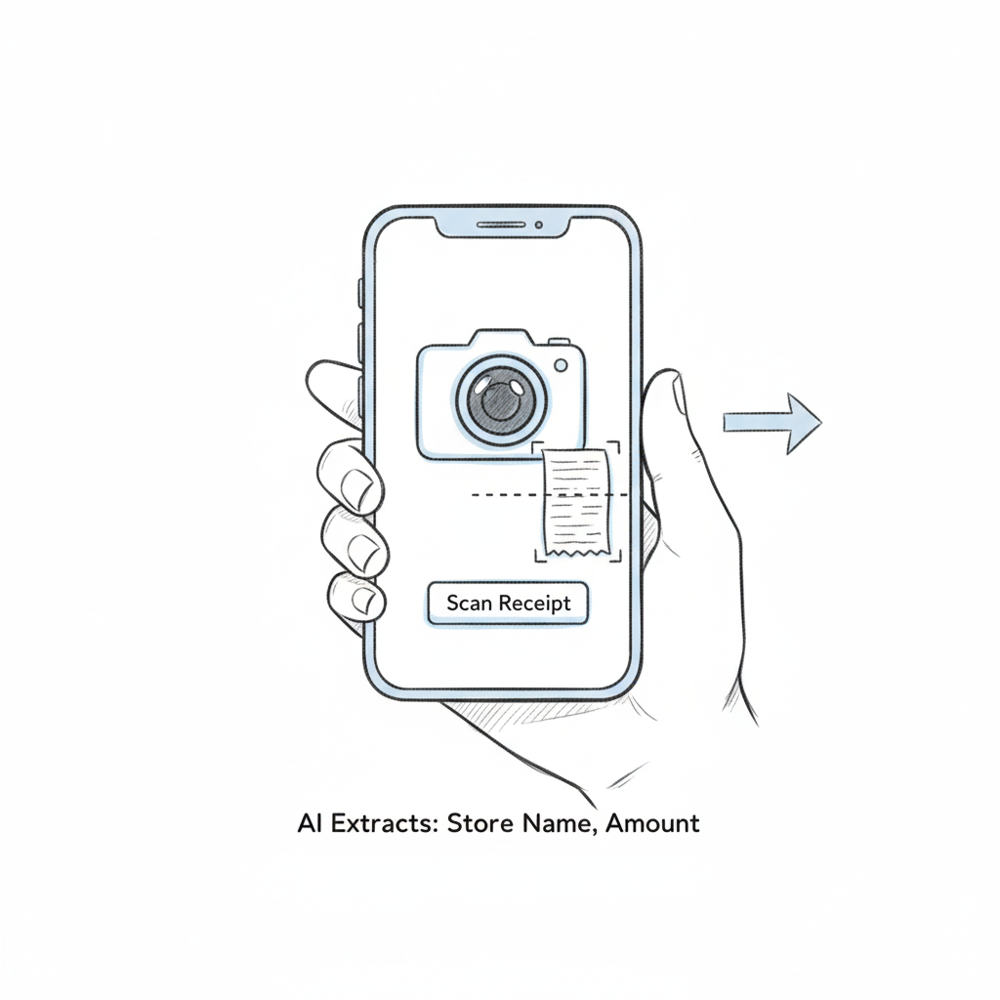
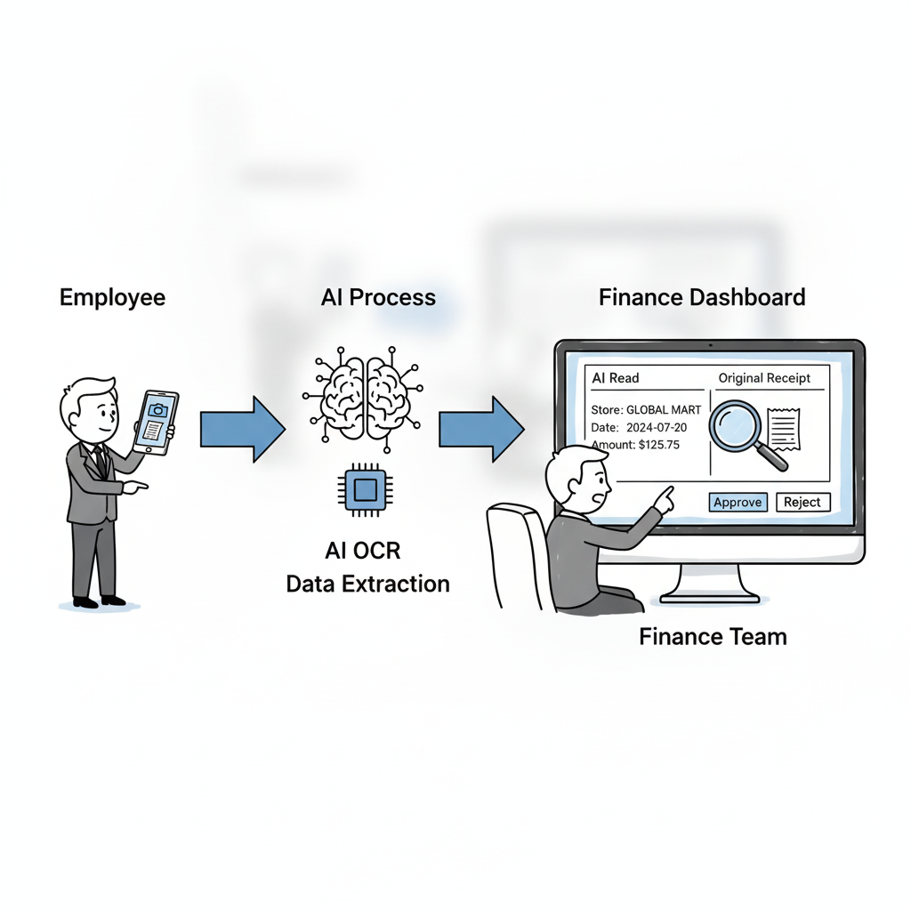
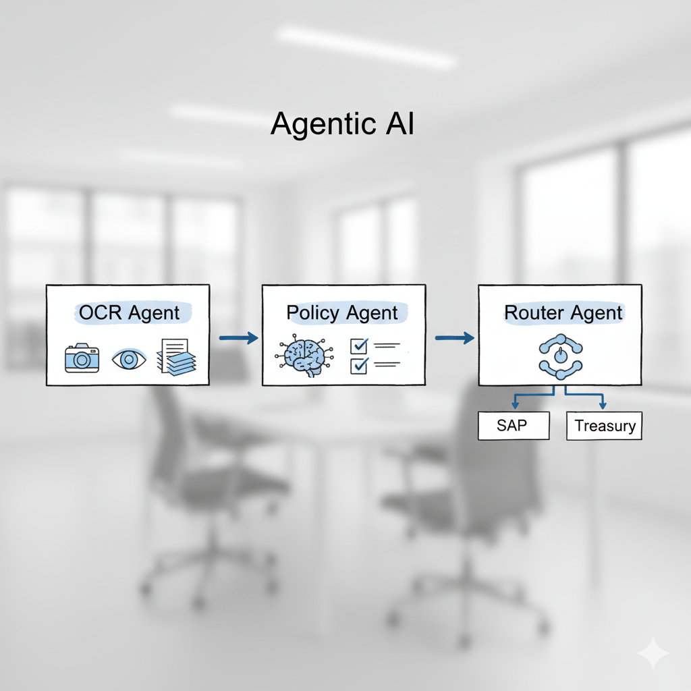

Card 1: แอปสแกน OCR

มือถือพร้อมปุ่ม Scan Receipt แสดงใบเสร็จที่ถูกเส้นประสแกนและข้อความ AI Extracts เพื่อสื่อว่าส่งข้อมูลต่อได้ทันที
โทนเส้นร่างเรียบง่ายเหมือนร่างดินสอ
Card 2: AI สแกน + Finance ตรวจ

ลำดับจากพนักงานส่งใบเสร็จเข้าสู่ AI OCR ก่อนจบที่หน้าจอ Finance Dashboard ที่เทียบ AI Read กับใบเสร็จจริงและมีปุ่ม Approve / Reject
Card 3: LINE Bot สแกนใบเสร็จ
อินเทอร์เฟซแชท LINE แสดงการส่งรูปใบเสร็จและการตอบกลับจากบอท “Got it: 150 THB from 7-Eleven” พร้อมพนักงานถือโทรศัพท์
Card 4: ระบบ AI อ่าน PDF (หลังบ้าน)
เอกสาร PDF วิ่งเข้าสู่กล่อง AI Process ก่อนแตกแขนงส่งผลลัพธ์ไปยัง SAP และ Treasury พร้อมคน Finance ที่ทำงานเบาลง
Card 5: ใช้ระบบ Enterprise (เช่น Concur)
หน้าจอมือถือแอป SAP Concur แสดงใบเสร็จ ช่องกรอกข้อมูล และปุ่ม Submit พร้อมลูกศรเชื่อมต่อไปยัง SAP และ Treasury
Card 6: ใช้ Local FinTech (เช่น PEAK)
อินเทอร์เฟซ FinTech ไทยระบุข้อมูลภาษี (Tax ID, VAT) พร้อมลูกศรที่เชื่อมต่อเข้าสู่ SAP และ Treasury แบบครบถ้วน
Card 7: แอปสแกนแบบ Gamify
มือถือแสดงคะแนน Quality Score, แถบความคืบหน้า, leaderboard และไอคอนแห่งความสำเร็จ เพื่อกระตุ้นการส่งผลลัพธ์ 100% outcome
Card 8: Agentic AI (แบ่งงานกันทำ)

ผังงาน Agentic AI ที่แบ่งเป็น OCR Agent, Policy Agent และ Router Agent ก่อนแยกผลลัพธ์ไปยัง SAP และ Treasury อย่างเป็นระบบ